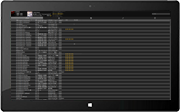
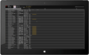

Remember all your music
μ is born for music. All your albums are far more shining in the brand new user interface. None of them will be forgetten in the corner thanks to the new built-in search. And now, μ can automatically adapt your screen, to show up your albums much better. The only thing you have to do, is enjoying your albums.
Lossless, no less
Playing music is the cornerstone of a music player, and the sound quality is the total life of it. μ supports a variety kinds of lossless music formats, also supports MP3, AAC and other popular audio formats*. The only thing you need to do is simply plugging in your headphones, sit and listen.
Enjoy your concert everywhere
Based on rock-solid Qt development framework, μ can run on all mainstream operating systems. Strong foundation provides strong performance and excellent user experience. Your computer has been on standby already, ready for you to start the concert.

 

Open-Source Force
Building μ is based on a number of open source projects. μ is a open source project, we not only hope μ can continuous evolve, but also to meet geeks custom desires. Anyone can get the source code and development documentation free of charge, we also provide timely online technical support.